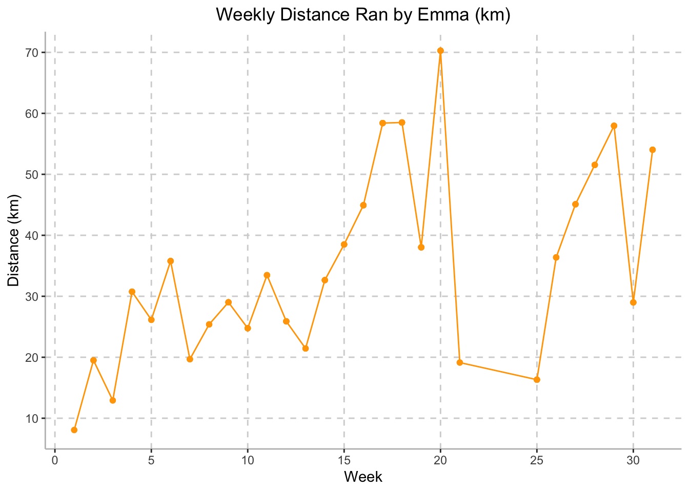
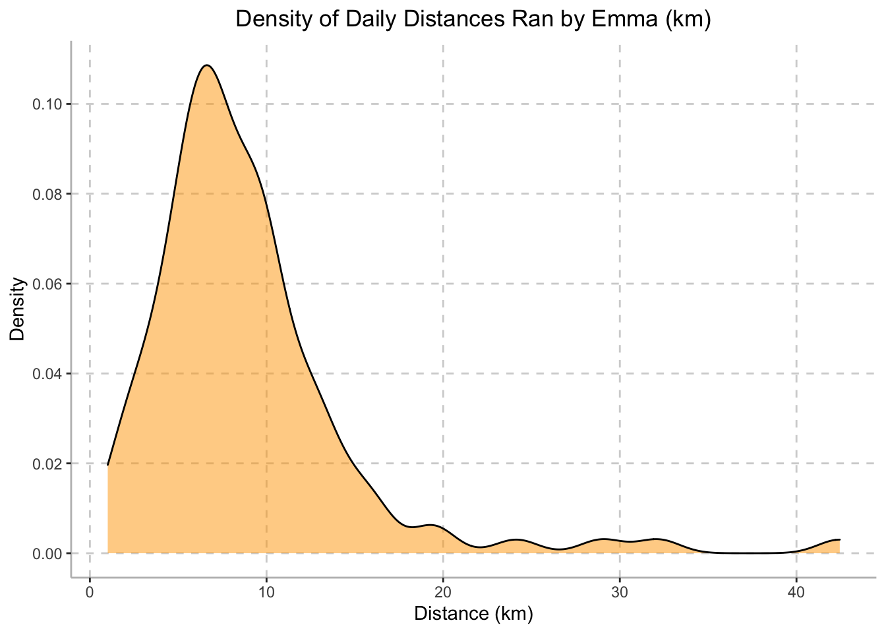
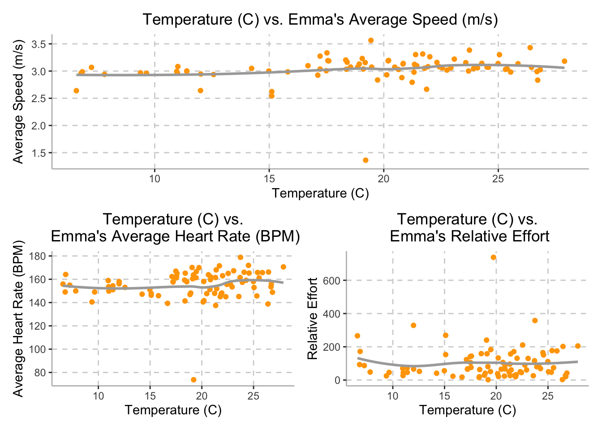
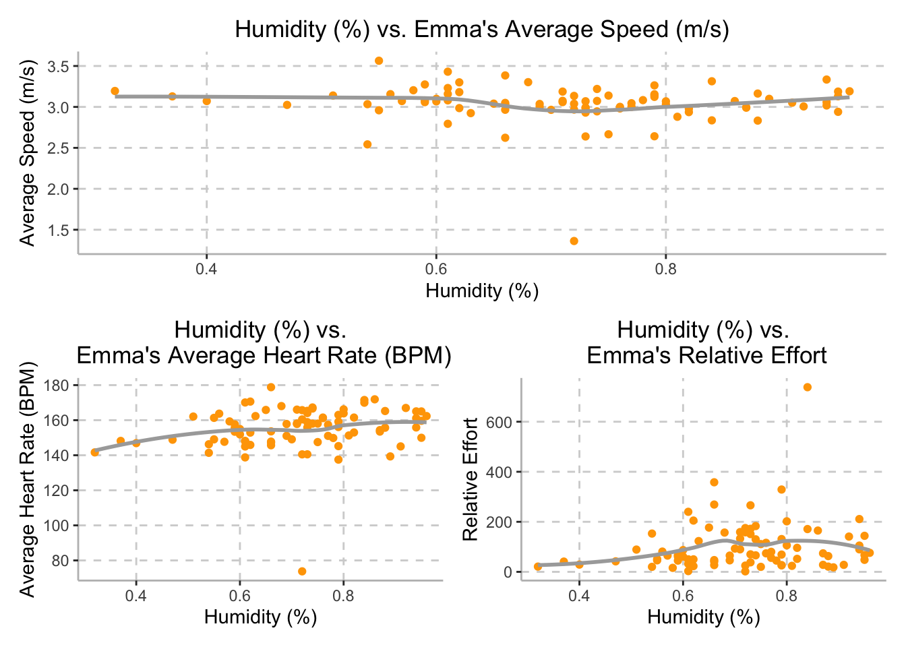

library(tidyverse)
library(FITfileR)
library(dplyr)
library(patchwork)
library(leaflet)
library(modelr)
training_raw <- read_csv("activities/activities.csv") %>%
janitor::clean_names()
training_summary =
training_raw %>%
filter(activity_type == "Run") %>%
select(activity_id, activity_date, activity_name, activity_description, elapsed_time_6, distance_7, max_heart_rate_8, relative_effort_9, max_speed, average_speed, elevation_gain, elevation_loss, max_grade, average_grade, max_cadence, average_cadence, average_heart_rate, calories, weather_temperature, dewpoint, humidity, wind_speed) %>%
filter(activity_id >= 6910869137) %>%
separate(activity_date, c("month_date", "year", "time"), sep = ", ") %>%
mutate(
date = str_c(month_date, year, sep = " "),
date = as.Date(date, format = "%b%d%Y")
) %>%
select(-month_date, -year) %>%
mutate(
elapsed_time_min = elapsed_time_6 / 60,
distance_km = distance_7,
max_heart_rate = max_heart_rate_8,
relative_effort = relative_effort_9
) %>%
select(-elapsed_time_6, -distance_7, -max_heart_rate_8, -relative_effort_9)
activity_summaries =
training_summary %>%
select(activity_id, date, time, activity_name, activity_description)
tidy_training =
training_summary %>%
select(-activity_name, -activity_description) %>%
select(activity_id, date, time, distance_km, elapsed_time_min, max_speed, average_speed, max_heart_rate, average_heart_rate, relative_effort, everything()) %>%
filter(date != "2022-03-31",
date != "2022-04-03")To first visualize Emma’s training schedule, we created a weekly mileage plot illustrating her mileage (km) ran over her training period. We then looked to investigate the optimal running length for her training sessions using a density plot, as well as investigating the relationship between temperature and average speed, average heart rate, and relative effort. We then investigated the relationship between humidity and average speed, average heart rate, and relative effort. Finally, we plotted Emma’s NYCM racing path throughout NYC, including average speed, heart rate, cadence, and altitude for each mile during the race.
Note: data only includes Emma’s logged activities - rest days were not included.
tidy_training = tidy_training %>%
mutate(week = as.numeric(strftime(date, format = "%V")) - 13) %>%
group_by(week) %>%
mutate(weekly_distance_km = sum(distance_km))
tidy_training %>%
ggplot(aes(x = week, y = weekly_distance_km)) +
geom_point(color = c("#FFA500")) +
geom_line(color = c("#FFA500")) +
labs(
title = "Weekly Distance Ran by Emma (km)",
x = "Week",
y = "Distance (km)") +
scale_x_continuous(breaks = scales::pretty_breaks(n = 5)) +
scale_y_continuous(breaks = scales::pretty_breaks(n = 5)) +
theme(axis.line = element_line(color = "grey"),
panel.background = element_blank(),
legend.position = "none",
panel.grid.major = element_line(color = "light grey", linetype = "dashed"),
plot.title = element_text(hjust = 0.5))
Emma’s mileage overtime gradually increased throughout her training period, peaking at Week 20 where she ran 70.28 km over the course of the week. Weeks 21-25 demonstrate a steep drop in weekly mileage. This was due to Emma’s illnesses and injuries, making her unable to run. The plot above demonstrates Emma’s ramp up in training mileage in preparation for the NYCM.
tidy_training %>%
ggplot(aes(x = distance_km), color = c("#FFA500")) +
geom_density(alpha = 0.5, fill = c("#FFA500")) +
labs(
title = "Density of Daily Distances Ran by Emma (km)",
x = "Distance (km)",
y = "Density") +
scale_x_continuous(breaks = scales::pretty_breaks(n = 5)) +
scale_y_continuous(breaks = scales::pretty_breaks(n = 5)) +
theme(axis.line = element_line(color = "grey"),
panel.background = element_blank(),
legend.position = "none",
panel.grid.major = element_line(color = "light grey", linetype = "dashed"),
plot.title = element_text(hjust = 0.5))
The density plot above illustrates the mileage at which Emma run’s most often during her training period. The plot peaks at a distance of approximately 7km, indicating that 7km is the length of most of Emma’s runs during her training period.
temp_avg_speed =
tidy_training %>%
ggplot(aes(x = weather_temperature, y = average_speed)) +
geom_point(color = c("#FFA500")) +
geom_smooth(se = FALSE, color = "dark grey") +
labs(
x = "Temperature (C)",
y = "Average Speed (m/s)") +
scale_x_continuous(breaks = scales::pretty_breaks(n = 5)) +
scale_y_continuous(breaks = scales::pretty_breaks(n = 5)) +
theme(axis.line = element_line(color = "grey"),
panel.background = element_blank(),
legend.position = "none",
panel.grid.major = element_line(color = "light grey", linetype = "dashed"),
plot.title = element_text(hjust = 0.5)) +
ggtitle("Temperature (C) vs. Emma's Average Speed (m/s)")
temp_avg_hrt =
tidy_training %>%
ggplot(aes(x = weather_temperature, y = average_heart_rate)) +
geom_point(color = c("#FFA500")) +
geom_smooth(se = FALSE, color = "dark grey") +
labs(
x = "Temperature (C)",
y = "Average Heart Rate (BPM)") +
scale_x_continuous(breaks = scales::pretty_breaks(n = 5)) +
scale_y_continuous(breaks = scales::pretty_breaks(n = 5)) +
theme(axis.line = element_line(color = "grey"),
panel.background = element_blank(),
legend.position = "none",
panel.grid.major = element_line(color = "light grey", linetype = "dashed"),
plot.title = element_text(hjust = 0.5)) +
ggtitle("Temperature (C) vs.\n Emma's Average Heart Rate (BPM)")
temp_rel_effort =
tidy_training %>%
ggplot(aes(x = weather_temperature, y = relative_effort)) +
geom_point(color = c("#FFA500")) +
geom_smooth(se = FALSE, color = "dark grey") +
labs(
x = "Temperature (C)",
y = "Relative Effort") +
scale_x_continuous(breaks = scales::pretty_breaks(n = 5)) +
scale_y_continuous(breaks = scales::pretty_breaks(n = 5)) +
theme(axis.line = element_line(color = "grey"),
panel.background = element_blank(),
legend.position = "none",
panel.grid.major = element_line(color = "light grey", linetype = "dashed"),
plot.title = element_text(hjust = 0.5)) +
ggtitle("Temperature (C) vs.\n Emma's Relative Effort")
temp_avg_speed /
(temp_avg_hrt | temp_rel_effort)
Although we expected Emma’s speed to be inversely proportional to the weather temperature, Emma’s average speed stayed approximately steady throughout the training period, with a speed of 3 meters per second (10.8 km per hour), while temperature varied between 6.58 degrees Celsius and 27.89 degrees Celsius.
Additionally, while we hypothesized that external temperature would be directly related to Emma’s average heart rate, the plot on the bottom left demonstrates that as temperature increases, there is little noticeable change in Emma’s average heart rate. Daily temperatures varied between 6.58 degrees Celsius and 27.89 degrees Celsius and Emma’s heart rate averaged around 155 beats per minute.
Finally, we also hypothesized that external temperature would be
directly related to Emma’s relative effort; however, the plot on the
bottom right demonstrates that external temperature and Emma’s relative
effort do not appear to be correlated. The variable
relative_effort is calculated by Strava and based off of
her maximum heart rate and pre-established heart rate zones. The plot
demonstrates that while temperature varied between 6.58 degrees Celsius
and 27.89 degrees Celsius, Emma’s relative effort averaged around
150.
humid_avg_speed =
tidy_training %>%
ggplot(aes(x = humidity, y = average_speed)) +
geom_point(color = c("#FFA500")) +
geom_smooth(se = FALSE, color = "dark grey") +
labs(
x = "Humidity (%)",
y = "Average Speed (m/s)") +
scale_x_continuous(breaks = scales::pretty_breaks(n = 5)) +
scale_y_continuous(breaks = scales::pretty_breaks(n = 5)) +
theme(axis.line = element_line(color = "grey"),
panel.background = element_blank(),
legend.position = "none",
panel.grid.major = element_line(color = "light grey", linetype = "dashed"),
plot.title = element_text(hjust = 0.5)) +
ggtitle("Humidity (%) vs. Emma's Average Speed (m/s)")
humid_avg_hrt =
tidy_training %>%
ggplot(aes(x = humidity, y = average_heart_rate)) +
geom_point(color = c("#FFA500")) +
geom_smooth(se = FALSE, color = "dark grey") +
labs(
x = "Humidity (%)",
y = "Average Heart Rate (BPM)") +
scale_x_continuous(breaks = scales::pretty_breaks(n = 5)) +
scale_y_continuous(breaks = scales::pretty_breaks(n = 5)) +
theme(axis.line = element_line(color = "grey"),
panel.background = element_blank(),
legend.position = "none",
panel.grid.major = element_line(color = "light grey", linetype = "dashed"),
plot.title = element_text(hjust = 0.5)) +
ggtitle("Humidity (%) vs.\n Emma's Average Heart Rate (BPM)")
humid_rel_effort =
tidy_training %>%
ggplot(aes(x = humidity, y = relative_effort)) +
geom_point(color = c("#FFA500")) +
geom_smooth(se = FALSE, color = "dark grey") +
labs(
x = "Humidity (%)",
y = "Relative Effort") +
scale_x_continuous(breaks = scales::pretty_breaks(n = 5)) +
scale_y_continuous(breaks = scales::pretty_breaks(n = 5)) +
theme(axis.line = element_line(color = "grey"),
panel.background = element_blank(),
legend.position = "none",
panel.grid.major = element_line(color = "light grey", linetype = "dashed"),
plot.title = element_text(hjust = 0.5)) +
ggtitle("Humidity (%) vs.\n Emma's Relative Effort")
humid_avg_speed /
(humid_avg_hrt | humid_rel_effort)
Although we expected Emma’s speed to be inversely related to the external humidity, Emma’s average speed stayed approximately steady throughout the training period, with a speed of 3 meters per second (10.8 km per hour), while humidity varied between between 32% and 96%, as demonstrated in the top plot above.
Additionally, while we hypothesized that external humidity would be directly related to Emma’s average heart rate, the plot on the bottom left demonstrates that there is a potential positive relationship between humidity and Emma’s average heart rate. Humidity varied between 32% and 96% and Emma’s average heart rate ranged between 145 to 165 beats per minute.
Finally, although we hypothesized that external humidity would be directly related to Emma’s relative effort, the plot on the bottom right demonstrates that relative effort may plateau at 150 once humidity reaches 70%; however, there is a large degree of variation in relative effort in this data set. The variable relative effort is calculated by Strava and based off of her heart rate during the training session. While humidity varied between 32% and 96%, Emma’s relative effort averaged around 150.